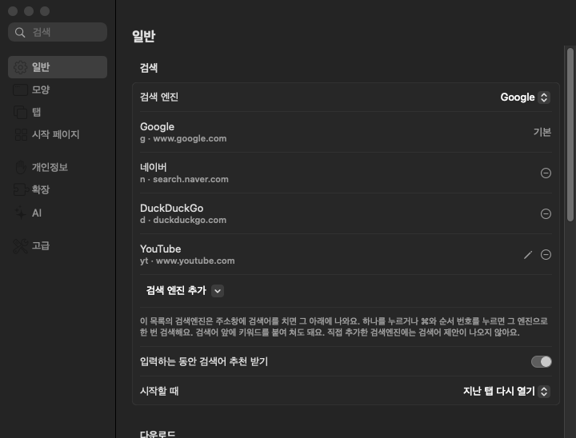
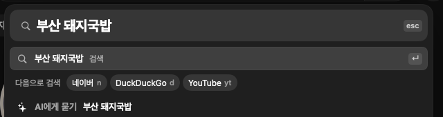

설정 › 일반 › 검색: 검색엔진이 하나의 목록이에요. 그림은 Bing을 빼고 유튜브를 넣은 상태예요.
- 빼기(−): 어떤 엔진이든 뺄 수 있어요. 지금 기본으로 쓰는 엔진만 "기본"이라 못 빼요.
- 검색 엔진 추가 ▾: 뺐던 엔진, 자주 쓰는 엔진(다음·유튜브·나무위키·위키백과·쿠팡·네이버 지도·GitHub·Perplexity), "직접 입력…"이 나와요.
- 직접 추가한 엔진은 연필로 이름·키워드·주소를 고칠 수 있어요.

주소창: 목록에 있는 엔진이 그대로 칩과 키워드가 돼요(기본 엔진은 첫 줄).
